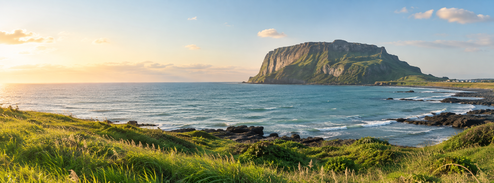
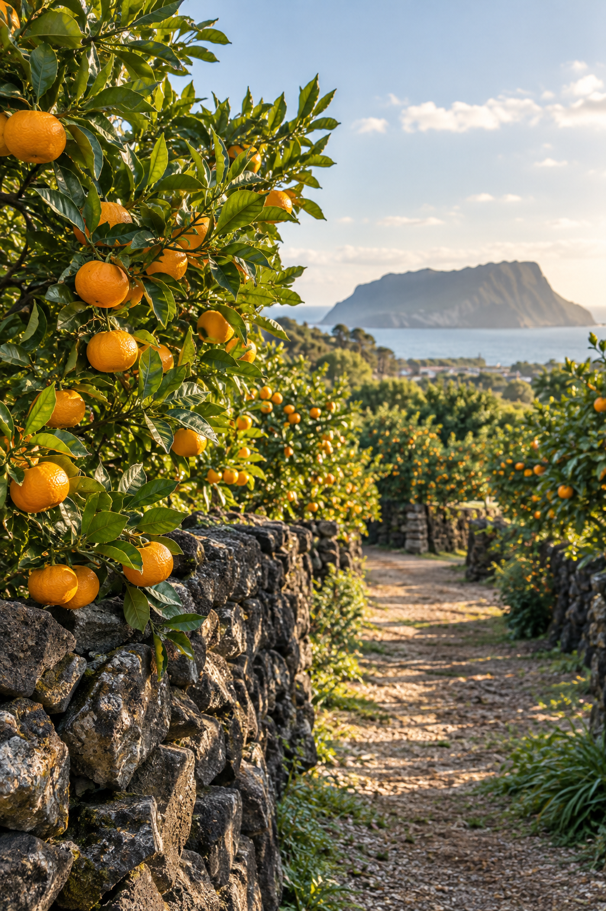
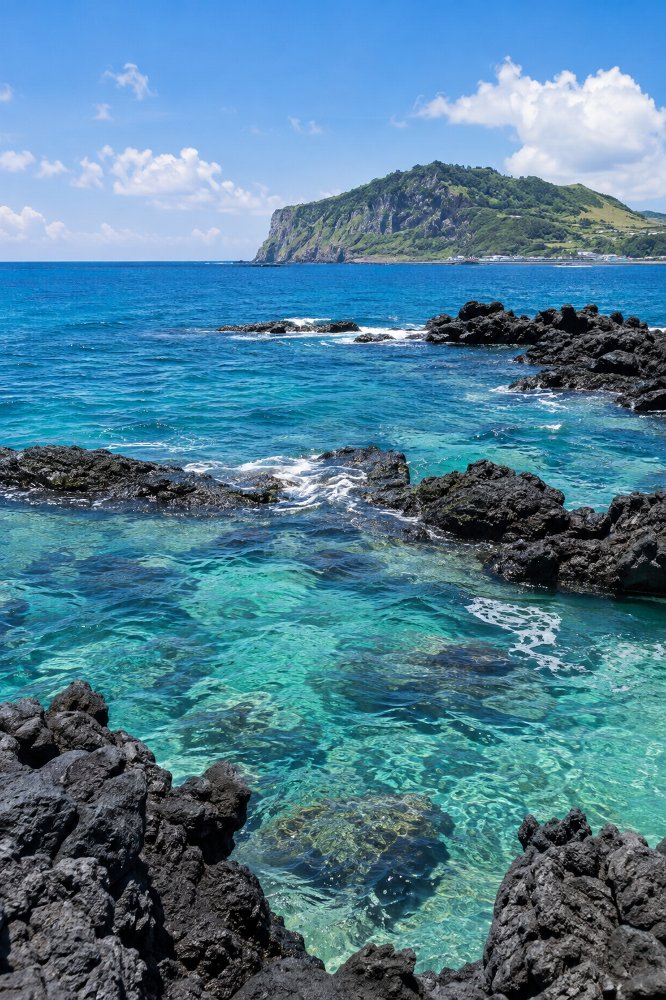

여행 날짜와 함께할 사람, 좋아하는 분위기를 알려주세요.
당신에게 어울리는 제주를 찾아볼게요.
한적한 자연싱그러운 감귤눈부신 바다
내 여행 만들기
✳ JEJU, THE WAY YOU LIKE IT
같은 제주라도, 누구와 언제 떠나는지에 따라 여행은 달라지니까.
내 취향을 담은 장소부터 하루의 동선까지 함께 찾아드려요.
초록 오름부터 감귤빛 오후, 투명한 바다까지.
여행의 시작은 마음에 드는 풍경 하나면 충분해요.

바람 따라 걷는 오름과 들판

돌담 너머 달콤한 계절

파도와 나란히 걷는 시간
* 위 사진은 디자인 시안을 위해 생성한 이미지입니다. 실제 관광지 사진으로 교체할 수 있습니다.
막막한 계획 대신, 내가 좋아하는 제주부터 시작하세요. 추천받은 장소를 골라 날짜별 여행을 완성할 수 있어요.
나만의 여행 시작하기날짜·지역·동행자와 여행 취향을 입력해요.
맞춤 추천과 네비픽에서 가고 싶은 곳을 골라요.
일차별 방문 순서를 정하고 지도에서 길을 확인해요.
돌아온 뒤 실제 방문과 만족도를 남겨요.